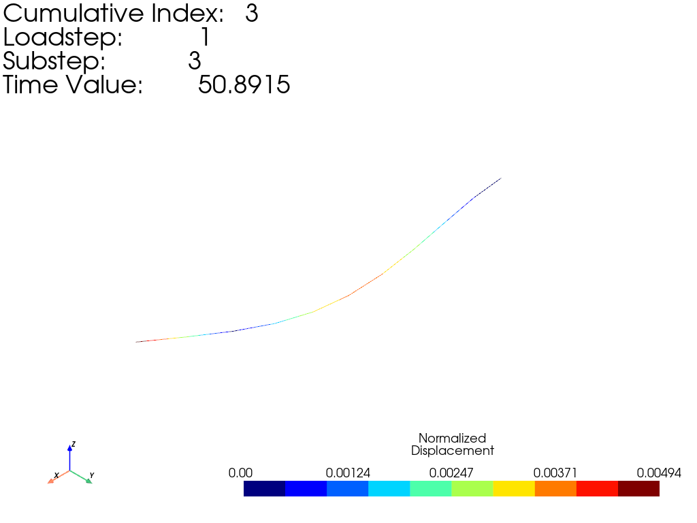
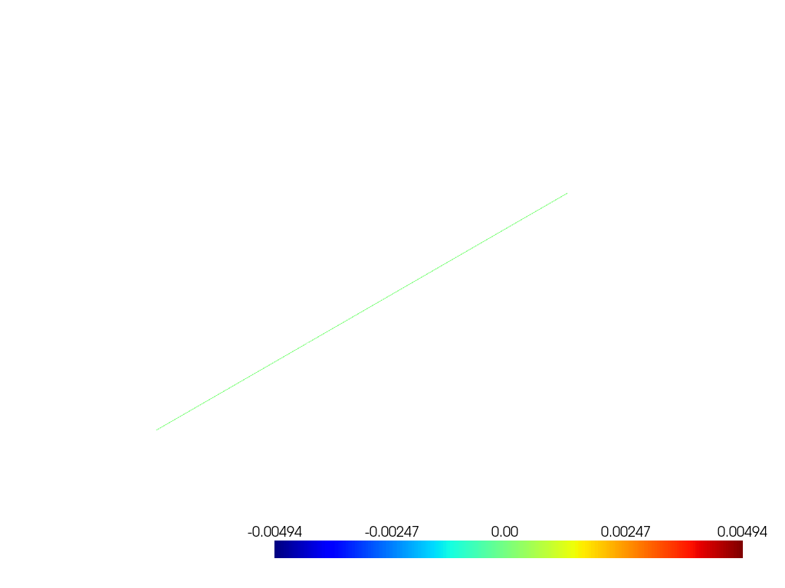

Note
Go to the end to download the full example code.
MAPDL modal beam analysis example#
This example demonstrates how to perform a simple modal analysis and animate its results.
Objective#
This example models a simple 3D elastic beam made of BEAM188 elements. These beams elements are made of a linear elastic material similar to steel, and have a rectangular section.
Procedure#
Launch MAPDL instance
Material properties
Geometry
Finite element model
Boundary conditions
Solving the model
Post-processing
Stop MAPDL
Launch MAPDL instance#
Launch MAPDL with interactive plotting
from ansys.mapdl.core import launch_mapdl
nmodes = 10
# start MAPDL
mapdl = launch_mapdl()
print(mapdl)
Mapdl
-----
PyMAPDL Version: 0.71.3
Interface: grpc
Product: Ansys Mechanical Enterprise
MAPDL Version: 25.2
Running on: localhost
(127.0.0.1)
Define material#
Define material
mapdl.prep7()
mapdl.mp("EX", 1, 2.1e11)
mapdl.mp("PRXY", 1, 0.3)
mapdl.mp("DENS", 1, 7800)
MATERIAL 1 DENS = 7800.000
Create geometry#
Create keypoints and line
mapdl.k(1)
mapdl.k(2, 10)
mapdl.l(1, 2)
mapdl.lplot()
Define finite element model#
Define element type/section type - Rectangular beam section.
mapdl.et(1, "BEAM188")
mapdl.sectype(1, "BEAM", "RECT")
mapdl.secoffset("CENT")
mapdl.secdata(2, 1)
# Mesh the line
mapdl.type(1)
mapdl.esize(1)
mapdl.lesize("ALL")
mapdl.lmesh("ALL")
mapdl.eplot()
mapdl.finish()
***** ROUTINE COMPLETED ***** CP = 0.000
Specify boundary conditions#
Fully fixed (clamped) end.
mapdl.solution() # Entering the solution processor.
mapdl.nsel("S", "LOC", "X", "0")
mapdl.d("ALL", "ALL")
mapdl.allsel()
mapdl.nplot(plot_bc=True, nnum=True)
Solve the model#
Setting modal analysis
mapdl.antype("MODAL")
mapdl.modopt("LANB", nmodes, 0, 200)
mapdl.solve()
mapdl.finish()
FINISH SOLUTION PROCESSING
***** ROUTINE COMPLETED ***** CP = 0.000
Postprocess#
Enter the post processor (post1)
mapdl.post1()
output = mapdl.set("LIST")
print(output)
result = mapdl.result
***** INDEX OF DATA SETS ON RESULTS FILE *****
SET TIME/FREQ LOAD STEP SUBSTEP CUMULATIVE
1 8.3233851 1 1 1
2 16.274527 1 2 2
3 50.891463 1 3 3
4 60.248510 1 4 4
5 89.208488 1 5 5
6 129.85203 1 6 6
7 138.63765 1 7 7
8 182.23482 1 8 8
Animate results
mode2plot = 2
normalizeDisplacement = 1 / result.nodal_displacement(mode2plot - 1)[1].max()
result.plot_nodal_displacement(
mode2plot,
show_displacement=True,
displacement_factor=normalizeDisplacement,
n_colors=10,
)
result.animate_nodal_displacement(
mode2plot,
loop=False,
add_text=False,
n_frames=100,
displacement_factor=normalizeDisplacement,
show_axes=False,
background="w",
movie_filename="animation.gif",
off_screen=True,
)
- 
- 
Rendering animation: 0%| | 0/100 [00:00<?, ?it/s]
Rendering animation: 1%| | 1/100 [00:00<00:15, 6.50it/s]
Rendering animation: 3%|▎ | 3/100 [00:00<00:07, 12.65it/s]
Rendering animation: 5%|▌ | 5/100 [00:00<00:06, 15.21it/s]
Rendering animation: 7%|▋ | 7/100 [00:00<00:05, 16.62it/s]
Rendering animation: 9%|▉ | 9/100 [00:00<00:05, 17.48it/s]
Rendering animation: 11%|█ | 11/100 [00:00<00:04, 17.98it/s]
Rendering animation: 13%|█▎ | 13/100 [00:00<00:04, 18.38it/s]
Rendering animation: 15%|█▌ | 15/100 [00:00<00:04, 18.60it/s]
Rendering animation: 17%|█▋ | 17/100 [00:00<00:04, 18.78it/s]
Rendering animation: 19%|█▉ | 19/100 [00:01<00:04, 18.94it/s]
Rendering animation: 21%|██ | 21/100 [00:01<00:04, 19.04it/s]
Rendering animation: 23%|██▎ | 23/100 [00:01<00:04, 18.97it/s]
Rendering animation: 25%|██▌ | 25/100 [00:01<00:03, 19.04it/s]
Rendering animation: 27%|██▋ | 27/100 [00:01<00:03, 18.95it/s]
Rendering animation: 29%|██▉ | 29/100 [00:01<00:03, 18.86it/s]
Rendering animation: 31%|███ | 31/100 [00:01<00:03, 18.83it/s]
Rendering animation: 33%|███▎ | 33/100 [00:01<00:03, 18.86it/s]
Rendering animation: 35%|███▌ | 35/100 [00:01<00:03, 18.87it/s]
Rendering animation: 37%|███▋ | 37/100 [00:02<00:03, 18.86it/s]
Rendering animation: 39%|███▉ | 39/100 [00:02<00:03, 18.87it/s]
Rendering animation: 41%|████ | 41/100 [00:02<00:03, 18.89it/s]
Rendering animation: 43%|████▎ | 43/100 [00:02<00:03, 18.82it/s]
Rendering animation: 45%|████▌ | 45/100 [00:02<00:02, 18.90it/s]
Rendering animation: 47%|████▋ | 47/100 [00:02<00:02, 18.96it/s]
Rendering animation: 49%|████▉ | 49/100 [00:02<00:02, 18.97it/s]
Rendering animation: 51%|█████ | 51/100 [00:02<00:02, 18.99it/s]
Rendering animation: 53%|█████▎ | 53/100 [00:02<00:02, 18.98it/s]
Rendering animation: 55%|█████▌ | 55/100 [00:02<00:02, 19.06it/s]
Rendering animation: 57%|█████▋ | 57/100 [00:03<00:02, 19.02it/s]
Rendering animation: 59%|█████▉ | 59/100 [00:03<00:02, 18.97it/s]
Rendering animation: 61%|██████ | 61/100 [00:03<00:02, 18.70it/s]
Rendering animation: 63%|██████▎ | 63/100 [00:03<00:01, 18.83it/s]
Rendering animation: 65%|██████▌ | 65/100 [00:03<00:01, 18.89it/s]
Rendering animation: 67%|██████▋ | 67/100 [00:03<00:01, 18.92it/s]
Rendering animation: 69%|██████▉ | 69/100 [00:03<00:01, 18.91it/s]
Rendering animation: 71%|███████ | 71/100 [00:03<00:01, 18.92it/s]
Rendering animation: 73%|███████▎ | 73/100 [00:03<00:01, 18.88it/s]
Rendering animation: 75%|███████▌ | 75/100 [00:04<00:01, 18.88it/s]
Rendering animation: 77%|███████▋ | 77/100 [00:04<00:01, 18.85it/s]
Rendering animation: 79%|███████▉ | 79/100 [00:04<00:01, 18.82it/s]
Rendering animation: 81%|████████ | 81/100 [00:04<00:01, 18.75it/s]
Rendering animation: 83%|████████▎ | 83/100 [00:04<00:00, 18.72it/s]
Rendering animation: 85%|████████▌ | 85/100 [00:04<00:00, 18.75it/s]
Rendering animation: 87%|████████▋ | 87/100 [00:04<00:00, 18.79it/s]
Rendering animation: 89%|████████▉ | 89/100 [00:04<00:00, 18.67it/s]
Rendering animation: 91%|█████████ | 91/100 [00:04<00:00, 18.59it/s]
Rendering animation: 93%|█████████▎| 93/100 [00:05<00:00, 18.64it/s]
Rendering animation: 95%|█████████▌| 95/100 [00:05<00:00, 18.66it/s]
Rendering animation: 97%|█████████▋| 97/100 [00:05<00:00, 18.73it/s]
Rendering animation: 99%|█████████▉| 99/100 [00:05<00:00, 18.77it/s]
Rendering animation: 100%|██████████| 100/100 [00:10<00:00, 9.54it/s]
[(16.153550716504107, 11.153550716504107, 11.153550716504107),
(5.0, 0.0, 0.0),
(0.0, 0.0, 1.0)]
Stop MAPDL#
mapdl.finish()
mapdl.exit()
Total running time of the script: (0 minutes 12.952 seconds)